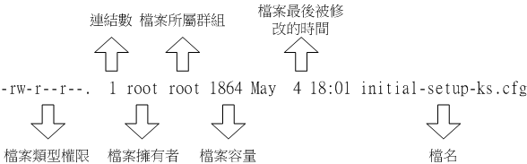

5.2 Linux 文件权限概念
大致了解了Linux的使用者与群组之后，接着下来，我们要来谈一谈，这个文件的权限要如何针对这些所谓的“使用者”与“群组”来设置呢？ 这个部分是相当重要的，尤其对于初学者来说，因为文件的权限与属性是学习Linux的一个相当重要的关卡， 如果没有这部份的概念，那么你将老是听不懂别人在讲什么呢！尤其是当你在你的屏幕前面出现了“Permission deny”的时候，不要担心，“肯定是权限设置错误”啦！呵呵！好了，闲话不多聊，赶快来瞧一瞧先。
5.2.1 Linux文件属性
嗯！既然要让你了解Linux的文件属性，那么有个重要的也是常用的指令就必须要先跟你说啰！那一个？就是“ ls ”这一个察看文件的指令啰！在你以dmtsai登陆系统，然后使用 su - 切换身份成为root后， 下达“ ls -al ”看看，会看到下面的几个咚咚：
[dmtsai@study ~]$ su - # 先来切换一下身份看看
Password:
Last login: Tue Jun 2 19:32:31 CST 2015 on tty2
[root@study ~]# ls -al
total 48
dr-xr-x---. 5 root root 4096 May 29 16:08 .
dr-xr-xr-x. 17 root root 4096 May 4 17:56 ..
-rw-------. 1 root root 1816 May 4 17:57 anaconda-ks.cfg
-rw-------. 1 root root 927 Jun 2 11:27 .bash_history
-rw-r--r--. 1 root root 18 Dec 29 2013 .bash_logout
-rw-r--r--. 1 root root 176 Dec 29 2013 .bash_profile
-rw-r--r--. 1 root root 176 Dec 29 2013 .bashrc
drwxr-xr-x. 3 root root 17 May 6 00:14 .config <=范例说明处
drwx------. 3 root root 24 May 4 17:59 .dbus
-rw-r--r--. 1 root root 1864 May 4 18:01 initial-setup-ks.cfg <=范例说明处
[ 1 ][ 2 ][ 3 ][ 4 ][ 5 ][ 6 ] [ 7 ]
[ 权限 ][链接][拥有者][群组][文件大小][ 修改日期 ] [ 文件名 ]

Tips 由于本章后续的chgrp, chown等指令可能都需要使用root的身份才能够处理，所以这里建议您以root的身份来学习！要注意的是， 我们还是不建议你直接使用 root 登陆系统，建议使用 su - 这个指令来切换身份喔！离开 su - 则使用 exit 回到 dmtsai 的身份即可！
ls是“list”的意思，重点在显示文件的文件名与相关属性。而选项“-al”则表示列出所有的文件详细的权限与属性 （包含隐藏文件，就是文件名第一个字符为“ . ”的文件）。如上所示，在你第一次以root身份登陆Linux时， 如果你输入上述指令后，应该有上列的几个东西，先解释一下上面七个字段个别的意思：
图5.2.1、文件属性的示意图
- 第一栏代表这个文件的类型与权限（permission）：
这个地方最需要注意了！仔细看的话，你应该可以发现这一栏其实共有十个字符：（图5.2.1及图5.2.2内的权限并无关系）
 图5.2.2、文件的类型与权限之内容
图5.2.2、文件的类型与权限之内容
第一个字符代表这个文件是“目录、文件或链接文件等等”：
接下来的字符中，以三个为一组，且均为“rwx” 的三个参数的组合。其中，[ r ]代表可读（read）、[ w ]代表可写（write）、[ x ]代表可执行（execute）。 要注意的是，这三个权限的位置不会改变，如果没有权限，就会出现减号[ - ]而已。
- 第一组为“文件拥有者可具备的权限”，以“initial-setup-ks.cfg”那个文件为例， 该文件的拥有者可以读写，但不可执行；
- 第二组为“加入此群组之帐号的权限”；
- 第三组为“非本人且没有加入本群组之其他帐号的权限”。
Tips 请你特别注意喔！不论是那一组权限，基本上，都是“针对某些帐号来设计的权限”喔！以群组来说，他规范的是“加入这个群组的帐号具有什么样的权限”之意， 以学校社团为例，假设学校有个童军社的社团办公室，“加入童军社的同学就可以进出社办”，主角是“学生（帐号）”而不是童军社本身喔！这样可以理解吗？
例题：若有一个文件的类型与权限数据为“-rwxr-xr--”，请说明其意义为何？答：先将整个类型与权限数据分开查阅，并将十个字符整理成为如下所示：
> [-][rwx][r-x][r--] > 1 234 567 890
1 为：代表这个文件名为目录或文件，本例中为文件（-）； 234为：拥有者的权限，本例中为可读、可写、可执行（rwx）； 567为：同群组使用者权限，本例中为可读可执行（rx）； 890为：其他使用者权限，本例中为可读（r），就是只读之意
同时注意到，rwx所在的位置是不会改变的，有该权限就会显示字符，没有该权限就变成减号（-）就是了。
另外，目录与文件的权限意义并不相同，这是因为目录与文件所记录的数据内容不相同所致。 由于目录与文件的权限意义非常的重要，所以鸟哥将他独立到5.2.3节中的目录与文件之权限意义中再来谈。
- 第二栏表示有多少文件名链接到此节点（i-node）：
每个文件都会将他的权限与属性记录到文件系统的i-node中，不过，我们使用的目录树却是使用文件名来记录， 因此每个文件名就会链接到一个i-node啰！这个属性记录的，就是有多少不同的文件名链接到相同的一个i-node号码去就是了。 关于i-node的相关数据我们会在第七章谈到文件系统时再加强介绍的。
第三栏表示这个文件（或目录）的“拥有者帐号”
第四栏表示这个文件的所属群组
在Linux系统下，你的帐号会加入于一个或多个的群组中。举刚刚我们提到的例子，class1, class2, class3均属于projecta这个群组，假设某个文件所属的群组为projecta，且该文件的权限如图5.2.2所示（-rwxrwx---）， 则class1, class2, class3三人对于该文件都具有可读、可写、可执行的权限（看群组权限）。 但如果是不属于projecta的其他帐号，对于此文件就不具有任何权限了。
第五栏为这个文件的容量大小，默认单位为Bytes；
第六栏为这个文件的创建日期或者是最近的修改日期：
这一栏的内容分别为日期（月/日）及时间。如果这个文件被修改的时间距离现在太久了，那么时间部分会仅显示年份而已。 如下所示：
[root@study ~]# ll /etc/services /root/initial-setup-ks.cfg
-rw-r--r--. 1 root root 670293 Jun 7 2013 /etc/services
-rw-r--r--. 1 root root 1864 May 4 18:01 /root/initial-setup-ks.cfg
# 如上所示，/etc/services 为 2013 年所修改过的文件，离现在太远之故，所以只显示年份；
# 至于 /root/initial-setup-ks.cfg 是今年 （2015） 所创建的，所以就显示完整的时间了。
如果想要显示完整的时间格式，可以利用ls的选项，亦即：“ls -l --full-time”就能够显示出完整的时间格式了！包括年、月、日、时间喔。 另外，如果你当初是以繁体中文安装你的Linux系统，那么日期字段将会以中文来显示。 可惜的是，中文并没有办法在纯文本的终端机模式中正确的显示，所以此栏会变成乱码。 那你就得要使用“export LC_ALL=en_US.utf8”来修改语系喔！
如果想要让系统默认的语系变成英文的话，那么你可以修改系统配置文件“/etc/locale.conf”，利用第四章谈到的nano来修改该文件的内容，使LANG这个变量成为上述的内容即可。
- 第七栏为这个文件的文件名
这个字段就是文件名了。比较特殊的是：如果文件名之前多一个“ . ”，则代表这个文件为“隐藏文件”，例如上表中的.config那一行，该文件就是隐藏文件。 你可以使用“ls”及“ls -a”这两个指令去感受一下什么是隐藏文件啰！
Tips 对于更详细的 ls 用法，还记得怎么查询吗？对啦！使用 ls --help 或 man ls 或 info ls 去看看他的基础用法去！自我进修是很重要的， 因为“师傅带进门，修行看个人！”，自古只有天才学生，没有明星老师呦！加油吧！^_^
这七个字段的意义是很重要的！务必清楚的知道各个字段代表的意义！尤其是第一个字段的九个权限， 那是整个Linux文件权限的重点之一。下面我们来做几个简单的练习，你就会比较清楚啰！
例题：假设test1, test2, test3同属于testgroup这个群组，如果有下面的两个文件，请说明两个文件的拥有者与其相关的权限为何？
-rw-r--r-- 1 root root 238 Jun 18 17:22 test.txt
-rwxr-xr-- 1 test1 testgroup 5238 Jun 19 10:25 ping_tsai
答：
文件test.txt的拥有者为root，所属群组为root。至于权限方面则只有root这个帐号可以存取此文件，其他人则仅能读此文件；
另一个文件ping_tsai的拥有者为test1，而所属群组为testgroup。其中：
- test1 可以针对此文件具有可读可写可执行的权力；
- 而同群组的test2, test3两个人与test1同样是testgroup的群组帐号，则仅可读可执行但不能写（亦即不能修改）；
- 至于没有加入testgroup这一个群组的其他人则仅可以读，不能写也不能执行！
例题：承上一题如果我的目录为下面的样式，请问testgroup这个群组的成员与其他人（others）是否可以进入本目录？
drwxr-xr-- 1 test1 testgroup 5238 Jun 19 10:25 groups/
答：
- 文件拥有者test1[rwx]可以在本目录中进行任何工作；
- 而testgroup这个群组[r-x]的帐号，例如test2, test3亦可以进入本目录进行工作，但是不能在本目录下进行写入的动作；
- 至于other的权限中[r--]虽然有r ，但是由于没有x的权限，因此others的使用者，并不能进入此目录！
- Linux文件权限的重要性：
与Windows系统不一样的是，在Linux系统当中，每一个文件都多加了很多的属性进来，尤其是群组的概念，这样有什么用途呢？ 其实，最大的用途是在“数据安全性”上面的。
系统保护的功能： 举个简单的例子，在你的系统中，关于系统服务的文件通常只有root才能读写或者是执行，例如/etc/shadow这一个帐号管理的文件，由于该文件记录了你系统中所有帐号的数据， 因此是很重要的一个配置文件，当然不能让任何人读取（否则密码会被窃取啊），只有root才能够来读取啰！所以该文件的权限就会成为[ ---------- ]啰！咦！所有人都不能使用？没关系，root基本上是不受系统的权限所限制的， 所以无论文件权限为何，默认root都可以存取喔！
团队开发软件或数据共享的功能： 此外，如果你有一个软件开发团队，在你的团队中，你希望每个人都可以使用某一些目录下的文件， 而非你的团队的其他人则不予以开放呢？以上面的例子来说，testgroup的团队共有三个人，分别是test1, test2, test3，那么我就可以将团队所需的文件权限订为[ -rwxrws--- ]来提供给testgroup的工作团队使用啰！（怎么会有 s 呢？没关系，这个我们在后续章节再讲给你听！）
未将权限设置妥当的危害： 再举个例子来说，如果你的目录权限没有作好的话，可能造成其他人都可以在你的系统上面乱搞啰！ 例如本来只有root才能做的开关机、ADSL的拨接程序、新增或删除使用者等等的指令，若被你改成任何人都可以执行的话， 那么如果使用者不小心给你重新开机啦！重新拨接啦！等等的！那么你的系统不就会常常莫名其妙的挂掉啰！ 而且万一你的使用者的密码被其他不明人士取得的话，只要他登陆你的系统就可以轻而易举的执行一些root的工作！
可怕吧！因此，在你修改你的linux文件与目录的属性之前，一定要先搞清楚， 什么数据是可变的，什么是不可变的！千万注意啰！接下来我们来处理一下文件属性与权限的变更吧！
5.2.2 如何改变文件属性与权限
我们现在知道文件权限对于一个系统的安全重要性了，也知道文件的权限对于使用者与群组的相关性， 那么如何修改一个文件的属性与权限呢？又！有多少文件的权限我们可以修改呢？ 其实一个文件的属性与权限有很多！我们先介绍几个常用于群组、拥有者、各种身份的权限之修改的指令，如下所示：
- chgrp ：改变文件所属群组
- chown ：改变文件拥有者
chmod ：改变文件的权限, SUID, SGID, SBIT等等的特性
改变所属群组, chgrp
改变一个文件的群组真是很简单的，直接以chgrp来改变即可，咦！这个指令就是change group的缩写嘛！这样就很好记了吧！ ^_^。不过，请记得，要被改变的群组名称必须要在/etc/group文件内存在才行，否则就会显示错误！
假设你已经是root的身份了，那么在你的主文件夹内有一个名为 initial-setup-ks.cfg 的文件， 如何将该文件的群组改变一下呢？假设你已经知道在/etc/group里面已经存在一个名为users的群组， 但是testing这个群组名字就不存在/etc/group当中了，此时改变群组成为users与testing分别会有什么现象发生呢？
[root@study ~]# chgrp [-R] dirname/filename ...
选项与参数：
-R : 进行递回（recursive）的持续变更，亦即连同次目录下的所有文件、目录
都更新成为这个群组之意。常常用在变更某一目录内所有的文件之情况。
范例：
[root@study ~]# chgrp users initial-setup-ks.cfg
[root@study ~]# ls -l
-rw-r--r--. 1 root users 1864 May 4 18:01 initial-setup-ks.cfg
[root@study ~]# chgrp testing initial-setup-ks.cfg
chgrp: invalid group: `testing' <== 发生错误讯息啰～找不到这个群组名～
发现了吗？文件的群组被改成users了，但是要改成testing的时候， 就会发生错误～注意喔！发生错误讯息还是要努力的查一查错误讯息的内容才好！ 将他英文翻译成为中文，就知道问题出在哪里了。
- 改变文件拥有者, chown
如何改变一个文件的拥有者呢？很简单呀！既然改变群组是change group，那么改变拥有者就是change owner啰！BINGO！那就是chown这个指令的用途，要注意的是， 使用者必须是已经存在系统中的帐号，也就是在/etc/passwd 这个文件中有纪录的使用者名称才能改变。
chown的用途还满多的，他还可以顺便直接修改群组的名称呢！此外，如果要连目录下的所有次目录或文件同时更改文件拥有者的话，直接加上 -R 的选项即可！我们来看看语法与范例：
[root@study ~]# chown [-R] 帐号名称 文件或目录
[root@study ~]# chown [-R] 帐号名称:群组名称 文件或目录
选项与参数：
-R : 进行递回（recursive）的持续变更，亦即连同次目录下的所有文件都变更
范例：将 initial-setup-ks.cfg 的拥有者改为bin这个帐号：
[root@study ~]# chown bin initial-setup-ks.cfg
[root@study ~]# ls -l
-rw-r--r--. 1 bin users 1864 May 4 18:01 initial-setup-ks.cfg
范例：将 initial-setup-ks.cfg 的拥有者与群组改回为root：
[root@study ~]# chown root:root initial-setup-ks.cfg
[root@study ~]# ls -l
-rw-r--r--. 1 root root 1864 May 4 18:01 initial-setup-ks.cfg
Tips 事实上，chown也可以使用“chown user.group file”，亦即在拥有者与群组间加上小数点“ . ”也行！ 不过很多朋友设置帐号时，喜欢在帐号当中加入小数点（例如vbird.tsai这样的帐号格式），这就会造成系统的误判了！ 所以我们比较建议使用冒号“:”来隔开拥有者与群组啦！此外，chown也能单纯的修改所属群组呢！ 例如“chown .sshd initial-setup-ks.cfg”就是修改群组～看到了吗？就是那个小数点的用途！
知道如何改变文件的群组与拥有者了，那么什么时候要使用chown或chgrp呢？或许你会觉得奇怪吧？ 是的，确实有时候需要变更文件的拥有者的，最常见的例子就是在复制文件给你之外的其他人时， 我们使用最简单的cp指令来说明好了：
[root@study ~]# cp 来源文件 目的文件
假设你今天要将.bashrc这个文件拷贝成为.bashrc_test文件名，且是要给bin这个人，你可以这样做：
[root@study ~]# cp .bashrc .bashrc_test
[root@study ~]# ls -al .bashrc*
-rw-r--r--. 1 root root 176 Dec 29 2013 .bashrc
-rw-r--r--. 1 root root 176 Jun 3 00:04 .bashrc_test <==新文件的属性没变
由于复制行为（cp）会复制执行者的属性与权限，所以！怎么办？.bashrc_test还是属于root所拥有， 如此一来，即使你将文件拿给bin这个使用者了，那他仍然无法修改的（看属性/权限就知道了吧）， 所以你就必须要将这个文件的拥有者与群组修改一下啰！知道如何修改了吧？
- 改变权限, chmod
文件权限的改变使用的是chmod这个指令，但是，权限的设置方法有两种， 分别可以使用数字或者是符号来进行权限的变更。我们就来谈一谈：
数字类型改变文件权限
Linux文件的基本权限就有九个，分别是owner/group/others三种身份各有自己的read/write/execute权限， 先复习一下刚刚上面提到的数据：文件的权限字符为：“-rwxrwxrwx”， 这九个权限是三个三个一组的！其中，我们可以使用数字来代表各个权限，各权限的分数对照表如下：
> r:4 > w:2 > x:1
每种身份（owner/group/others）各自的三个权限（r/w/x）分数是需要累加的，例如当权限为： [-rwxrwx---] 分数则是：
> owner = rwx = 4+2+1 = 7 > group = rwx = 4+2+1 = 7 > others= --- = 0+0+0 = 0
所以等一下我们设置权限的变更时，该文件的权限数字就是770啦！变更权限的指令chmod的语法是这样的：
[root@study ~]# chmod [-R] xyz 文件或目录 选项与参数： xyz : 就是刚刚提到的数字类型的权限属性，为 rwx 属性数值的相加。 -R : 进行递回（recursive）的持续变更，亦即连同次目录下的所有文件都会变更举例来说，如果要将.bashrc这个文件所有的权限都设置启用，那么就下达：
[root@study ~]# ls -al .bashrc -rw-r--r--. 1 root root 176 Dec 29 2013 .bashrc [root@study ~]# chmod 777 .bashrc [root@study ~]# ls -al .bashrc -rwxrwxrwx. 1 root root 176 Dec 29 2013 .bashrc那如果要将权限变成“ -rwxr-xr-- ”呢？那么权限的分数就成为 [4+2+1][4+0+1][4+0+0]=754 啰！所以你需要下达“ chmod 754 filename”。 另外，在实际的系统运行中最常发生的一个问题就是，常常我们以vim编辑一个shell的文字批处理文件后，他的权限通常是 -rw-rw-r-- 也就是664， 如果要将该文件变成可可执行文件，并且不要让其他人修改此一文件的话， 那么就需要-rwxr-xr-x这样的权限，此时就得要下达：“ chmod 755 test.sh ”的指令啰！
另外，如果有些文件你不希望被其他人看到，那么应该将文件的权限设置为例如：“-rwxr-----”，那就下达“ chmod 740 filename ”吧！
例题：将刚刚你的.bashrc这个文件的权限修改回-rw-r--r--的情况吧！答：-rw-r--r--的分数是644，所以指令为：
chmod 644 .bashrc符号类型改变文件权限
还有一个改变权限的方法呦！从之前的介绍中我们可以发现，基本上就九个权限分别是（1）user （2）group （3）others三种身份啦！那么我们就可以借由u, g, o来代表三种身份的权限！此外， a 则代表 all 亦即全部的身份！那么读写的权限就可以写成r, w, x啰！也就是可以使用下面的方式来看：
| chmod | u g o a | +（加入） -（除去） =（设置） | r w x | 文件或目录 |来实作一下吧！假如我们要“设置”一个文件的权限成为“-rwxr-xr-x”时，基本上就是：
- user （u）：具有可读、可写、可执行的权限；
- group 与 others （g/o）：具有可读与执行的权限。 所以就是：
[root@study ~]# chmod u=rwx,go=rx .bashrc # 注意喔！那个 u=rwx,go=rx 是连在一起的，中间并没有任何空白字符！ [root@study ~]# ls -al .bashrc -rwxr-xr-x. 1 root root 176 Dec 29 2013 .bashrc那么假如是“ -rwxr-xr-- ”这样的权限呢？可以使用“ chmod u=rwx,g=rx,o=r filename ”来设置。此外，如果我不知道原先的文件属性，而我只想要增加.bashrc这个文件的每个人均可写入的权限， 那么我就可以使用：
[root@study ~]# ls -al .bashrc -rwxr-xr-x. 1 root root 176 Dec 29 2013 .bashrc [root@study ~]# chmod a+w .bashrc [root@study ~]# ls -al .bashrc -rwxrwxrwx. 1 root root 176 Dec 29 2013 .bashrc而如果是要将权限去掉而不更动其他已存在的权限呢？例如要拿掉全部人的可执行权限，则：s
[root@study ~]# chmod a-x .bashrc [root@study ~]# ls -al .bashrc -rw-rw-rw-. 1 root root 176 Dec 29 2013 .bashrc [root@study ~]# chmod 644 .bashrc # 测试完毕得要改回来喔！知道 +, -, = 的不同点了吗？对啦！ + 与 – 的状态下，只要是没有指定到的项目，则该权限“不会被变动”， 例如上面的例子中，由于仅以 – 拿掉 x 则其他两个保持当时的值不变！多多实作一下，你就会知道如何改变权限啰！ 这在某些情况下面很好用的～举例来说，你想要教一个朋友如何让一个程序可以拥有执行的权限， 但你又不知道该文件原本的权限为何，此时，利用“chmod a+x filename” ，就可以让该程序拥有执行的权限了。是否很方便？
5.2.3 目录与文件之权限意义：
现在我们知道了Linux系统内文件的三种身份（拥有者、群组与其他人），知道每种身份都有三种权限（rwx）， 已知道能够使用chown, chgrp, chmod去修改这些权限与属性，当然，利用ls -l去观察文件也没问题。 前两小节也谈到了这些文件权限对于数据安全的重要性。那么，这些文件权限对于一般文件与目录文件有何不同呢？ 有大大的不同啊！下面就让鸟哥来说清楚，讲明白！
- 权限对文件的重要性
文件是实际含有数据的地方，包括一般文本文件、数据库内容档、二进制可可执行文件（binary program）等等。 因此，权限对于文件来说，他的意义是这样的：
- r （read）：可读取此一文件的实际内容，如读取文本文件的文字内容等；
- w （write）：可以编辑、新增或者是修改该文件的内容（但不含删除该文件）；
- x （eXecute）：该文件具有可以被系统执行的权限。
那个可读（r）代表读取文件内容是还好了解，那么可执行（x）呢？这里你就必须要小心啦！ 因为在Windows下面一个文件是否具有执行的能力是借由“ 扩展名 ”来判断的， 例如：.exe, .bat, .com 等等，但是在Linux下面，我们的文件是否能被执行，则是借由是否具有“x”这个权限来决定的！跟文件名是没有绝对的关系的！
至于最后一个w这个权限呢？当你对一个文件具有w权限时，你可以具有写入/编辑/新增/修改文件的内容的权限， 但并不具备有删除该文件本身的权限！对于文件的rwx来说， 主要都是针对“文件的内容”而言，与文件文件名的存在与否没有关系喔！因为文件记录的是实际的数据嘛！
- 权限对目录的重要性
文件是存放实际数据的所在，那么目录主要是储存啥玩意啊？目录主要的内容在记录文件名清单，文件名与目录有强烈的关连啦！ 所以如果是针对目录时，那个 r, w, x 对目录是什么意义呢？
r （read contents in directory）：
表示具有读取目录结构清单的权限，所以当你具有读取（r）一个目录的权限时，表示你可以查询该目录下的文件名数据。 所以你就可以利用 ls 这个指令将该目录的内容列表显示出来！
w （modify contents of directory）：
这个可写入的权限对目录来说，是很了不起的！ 因为他表示你具有异动该目录结构清单的权限，也就是下面这些权限：
- 创建新的文件与目录；
- 删除已经存在的文件与目录（不论该文件的权限为何！）
- 将已存在的文件或目录进行更名；
- 搬移该目录内的文件、目录位置。 总之，目录的w权限就与该目录下面的文件名异动有关就对了啦！
x （access directory）：
咦！目录的执行权限有啥用途啊？目录只是记录文件名而已，总不能拿来执行吧？没错！目录不可以被执行，目录的x代表的是使用者能否进入该目录成为工作目录的用途！ 所谓的工作目录（work directory）就是你目前所在的目录啦！举例来说，当你登陆Linux时， 你所在的主文件夹就是你当下的工作目录。而变换目录的指令是“cd”（change directory）啰！
上面的东西这么说，也太条列式～太教条了～有没有清晰一点的说明啊？好～让我们来思考一下人类社会使用的东西好了！ 现在假设“文件是一堆文件数据夹”，所以你可能可以在上面写/改一些数据。而“目录是一堆抽屉”，因此你可以将数据夹分类放置到不同的抽屉去。 因此抽屉最大的目的是拿出/放入数据夹喔！现在让我们汇整一下数据：
| 元件 | 内容 | 叠代物件 | r | w | x |
|---|---|---|---|---|---|
| 文件 | 详细数据data | 文件数据夹 | 读到文件内容 | 修改文件内容 | 执行文件内容 |
| 目录 | 文件名 | 可分类抽屉 | 读到文件名 | 修改文件名 | 进入该目录的权限（key） |
根据上述的分析，你可以看到，对一般文件来说，rwx 主要是针对“文件的内容”来设计权限，对目录来说，rwx则是针对“目录内的文件名列表”来设计权限。 其中最有趣的大概就属目录的 x 权限了！“文件名怎么执行”？没道理嘛！其实，这个 x 权限设计，就相当于“该目录，也就是该抽屉的 "钥匙" ”啦！ 没有钥匙你怎么能够打开抽屉呢？对吧！
大致的目录权限概念是这样，下面我们来看几个范例，让你了解一下啥是目录的权限啰！
例题：有个目录的权限如下所示：
drwxr--r-- 3 root root 4096 Jun 25 08:35 .ssh
系统有个帐号名称为vbird，这个帐号并没有支持root群组，请问vbird对这个目录有何权限？是否可切换到此目录中？答：vbird对此目录仅具有r的权限，因此vbird可以查询此目录下的文件名列表。因为vbird不具有x的权限，亦即 vbird 没有这个抽屉的钥匙啦！ 因此vbird并不能切换到此目录内！（相当重要的概念！） |
上面这个例题中因为vbird具有r的权限，因为是r乍看之下好像就具有可以进入此目录的权限，其实那是错的。 能不能进入某一个目录，只与该目录的x权限有关啦！此外， 工作目录对于指令的执行是非常重要的，如果你在某目录下不具有x的权限， 那么你就无法切换到该目录下，也就无法执行该目录下的任何指令，即使你具有该目录的r或w的权限。
很多朋友在架设网站的时候都会卡在一些权限的设置上，他们开放目录数据给网际网络的任何人来浏览， 却只开放r的权限，如上面的范例所示那样，那样的结果就是导致网站服务器软件无法到该目录下读取文件（最多只能看到文件名）， 最终用户总是无法正确的查阅到文件的内容（显示权限不足啊！）。要注意：要开放目录给任何人浏览时，应该至少也要给予r及x的权限，但w权限不可随便给！ 为什么w不能随便给，我们来看下一个例子：
例题：假设有个帐号名称为dmtsai，他的主文件夹在/home/dmtsai/，dmtsai对此目录具有[rwx]的权限。 若在此目录下有个名为the_root.data的文件，该文件的权限如下：
-rwx------ 1 root root 4365 Sep 19 23:20 the_root.data
请问dmtsai对此文件的权限为何？可否删除此文件？答：如上所示，由于dmtsai对此文件来说是“others”的身份，因此这个文件他无法读、无法编辑也无法执行， 也就是说，他无法变动这个文件的内容就是了。
但是由于这个文件在他的主文件夹下， 他在此目录下具有rwx的完整权限，因此对于the_root.data这个“文件名”来说，他是能够“删除”的！ 结论就是，dmtsai这个用户能够删除the_root.data这个文件！ |
Tips 上述的例子解释是这样的，假设有个莫名其妙的人，拿着一个完全密封的数据夹放到你的办公室抽屉中，因为完全密封你也打不开、看不到这个数据夹的内部数据（对文件来说，你没有权限）。 但是因为这个数据夹是放在你的抽屉中，你当然可以拿出/放入任何数据在这个抽屉中（对目录来说，你具有所有权限）。 所以，情况就是：你打开抽屉、拿出这个没办法看到的数据夹、将他丢到走廊上的垃圾桶！搞定了 （顺利删除！）！
还是看不太懂？有听没有懂喔！没关系～我们下面就来设计一个练习， 让你实际玩玩看，应该就能够比较近入状况啦！不过，由于很多指令我们还没有教， 所以下面的指令有的先了解即可，详细的指令用法我们会在后面继续介绍的。
- 先用root的身份创建所需要的文件与目录环境
我们用root的身份在所有人都可以工作的/tmp目录中创建一个名为testing的目录， 该目录的权限为744且目录拥有者为root。另外，在testing目录下在创建一个空的文件， 文件名亦为testing。创建目录可用mkdir（make directory），创建空文件可用touch（下一章会说明）来处理。 所以过程如下所示：
[root@study ~]# cd /tmp <==切换工作目录到/tmp
[root@study tmp]# mkdir testing <==创建新目录
[root@study tmp]# chmod 744 testing <==变更权限
[root@study tmp]# touch testing/testing <==创建空的文件
[root@study tmp]# chmod 600 testing/testing <==变更权限
[root@study tmp]# ls -ald testing testing/testing
drwxr--r--. 2 root root 20 Jun 3 01:00 testing
-rw-------. 1 root root 0 Jun 3 01:00 testing/testing
# 仔细看一下，目录的权限是 744 ，且所属群组与使用者均是 root 喔！
# 那么在这样的情况下面，一般身份使用者对这个目录/文件的权限为何？
- 一般用户的读写权限为何？观察中
在上面的例子中，虽然目录是744的权限设置，一般用户应该能有 r 的权限， 但这样的权限使用者能做啥事呢？由于鸟哥的系统中含有一个帐号名为 dmtsai 的，请再开另外一个终端机，使用 dmtsai 登陆来操作下面的任务！
[dmtsai@study ~]$ cd /tmp
[dmtsai@study tmp]$ ls -l testing/
ls: cannot access testing/testing: Permission denied
total 0
?????????? ? ? ? ? ? testing
# 虽然有告知权限不足，但因为具有 r 的权限可以查询文件名。由于权限不足（没有x），所以会有一堆问号。
[dmtsai@study tmp]$ cd testing/
-bash: cd: testing/: Permission denied
# 因为不具有 x ，所以当然没有进入的权限啦！有没有呼应前面的权限说明啊！
- 如果该目录属于用户本身，会有什么状况？
上面的练习我们知道了只有r确实可以让使用者读取目录的文件名列表，不过详细的信息却还是读不到的， 同时也不能将该目录变成工作目录（用 cd 进入该目录之意）。那如果我们让该目录变成使用者的， 那么使用者在这个目录下面是否能够删除文件呢？下面的练习做看看：
# 1\. 先用 root 的身份来搞定 /tmp/testing 的属性、权限设置：
[root@study tmp]# chown dmtsai /tmp/testing
[root@study tmp]# ls -ld /tmp/testing
drwxr--r--. 2 dmtsai root 20 6月 3 01:00 /tmp/testing # dmtsai 是具有全部权限的！
# 2\. 再用 dmtsai 的帐号来处理一下 /tmp/testing/testing 这个文件看看：
[dmtsai@study tmp]$ cd /tmp/testing
[dmtsai@study testing]$ ls -l <==确实是可以进入目录
-rw-------. 1 root root 0 Jun 3 01:00 testing <==文件不是vbird的！
[dmtsai@study testing]$ rm testing <==尝试杀掉这个文件看看！
rm: remove write-protected regular empty file `testing'? y
# 竟然可以删除！这样理解了吗？！
通过上面这个简单的步骤，你就可以清楚的知道， x 在目录当中是与“能否进入该目录”有关， 至于那个 w 则具有相当重要的权限，因为他可以让使用者删除、更新、新建文件或目录， 是个很重要的参数啊！这样可以理解了吗？！ ^_^！
- 使用者操作功能与权限
刚刚讲这样如果你还是搞不懂～没关系，我们来处理个特殊的案例！假设两个文件名，分别是下面这样：
- /dir1/file1
- /dir2
假设你现在在系统使用 dmtsai 这个帐号，那么这个帐号针对 /dir1, /dir1/file1, /dir2 这三个文件名来说，分别需要“哪些最小的权限”才能达成各项任务？ 鸟哥汇整如下，如果你看得懂，恭喜你，如果你看不懂～没关系～未来再来继续学！
| 操作动作 | /dir1 | /dir1/file1 | /dir2 | 重点 |
|---|---|---|---|---|
| 读取 file1 内容 | x | r | - | 要能够进入 /dir1 才能读到里面的文件数据！ |
| 修改 file1 内容 | x | rw | - | 能够进入 /dir1 且修改 file1 才行！ |
| 执行 file1 内容 | x | rx | - | 能够进入 /dir1 且 file1 能运行才行！ |
| 删除 file1 文件 | wx | - | - | 能够进入 /dir1 具有目录修改的权限即可！ |
| 将 file1 复制到 /dir2 | x | r | wx | 要能够读 file1 且能够修改 /dir2 内的数据 |
你可能会问，上面的表格当中，很多时候 /dir1 都不必有 r 耶！为啥？我们知道 /dir1 是个目录，也是个抽屉！那个抽屉的 r 代表“这个抽屉里面有灯光”， 所以你能看到的抽屉内的所有数据夹名称 （非内容）。但你已经知道里面的数据夹放在哪个地方，那，有没有灯光有差嘛？你还是可以摸黑拿到该数据夹的！对吧！ 因此，上面很多动作中，你只要具有 x 即可！r 是非必备的！只是，没有 r 的话，使用 [tab] 时，他就无法自动帮你补齐文件名了！这样理解乎？
Tips 看了上面这个表格，你应该会觉得很可怕喔！因为，要读一个文件时，你得要具有“这个文件所在目录的 x 权限”才行！所以，通常要开放的目录， 至少会具备 rx 这两个权限！现在你知道为啥了吧？
5.2.4 Linux文件种类与扩展名
我们在基础篇一直强调一个概念，那就是：任何设备在Linux下面都是文件， 不仅如此，连数据沟通的接口也有专属的文件在负责～所以，你会了解到，Linux的文件种类真的很多～ 除了前面提到的一般文件（-）与目录文件（d）之外，还有哪些种类的文件呢？
- 文件种类：
我们在刚刚提到使用“ls -l”观察到第一栏那十个字符中，第一个字符为文件的类型。 除了常见的一般文件（-）与目录文件（d）之外，还有哪些种类的文件类型呢？
正规文件（regular file ）： 就是一般我们在进行存取的类型的文件，在由 ls -al 所显示出来的属性方面，第一个字符为 [ - ]，例如 [-rwxrwxrwx ]。另外，依照文件的内容，又大略可以分为：
纯文本文件（ASCII）：这是Linux系统中最多的一种文件类型啰， 称为纯文本文件是因为内容为我们人类可以直接读到的数据，例如数字、字母等等。 几乎只要我们可以用来做为设置的文件都属于这一种文件类型。 举例来说，你可以下达“ cat ~/.bashrc ”就可以看到该文件的内容。 （cat 是将一个文件内容读出来的指令）
二进制档（binary）：还记得我们在“ 第零章、计算机概论 ”里面的软件程序的运行中提过， 我们的系统其实仅认识且可以执行二进制文件（binary file）吧？没错～ 你的Linux当中的可可执行文件（scripts, 文字体批处理文件不算）就是这种格式的啦～ 举例来说，刚刚下达的指令cat就是一个binary file。
数据格式文件（data）： 有些程序在运行的过程当中会读取某些特定格式的文件，那些特定格式的文件可以被称为数据文件 （data file）。举例来说，我们的Linux在使用者登陆时，都会将登录的数据记录在 /var/log/wtmp那个文件内，该文件是一个data file，他能够通过last这个指令读出来！ 但是使用cat时，会读出乱码～因为他是属于一种特殊格式的文件。瞭乎？
目录（directory）： 就是目录啰～第一个属性为 [ d ]，例如 [drwxrwxrwx]。
链接文件（link）： 就是类似Windows系统下面的捷径啦！ 第一个属性为 [ l ]（英文L的小写），例如 [lrwxrwxrwx] ；
设备与设备文件（device）： 与系统周边及储存等相关的一些文件， 通常都集中在/dev这个目录之下！通常又分为两种：
区块（block）设备文件 ：就是一些储存数据， 以提供系统随机存取的周边设备，举例来说，硬盘与软盘等就是啦！ 你可以随机的在硬盘的不同区块读写，这种设备就是区块设备啰！你可以自行查一下/dev/sda看看， 会发现第一个属性为[ b ]喔！
字符（character）设备文件：亦即是一些序列埠的周边设备， 例如键盘、鼠标等等！这些设备的特色就是“一次性读取”的，不能够截断输出。 举例来说，你不可能让鼠标“跳到”另一个画面，而是“连续性滑动”到另一个地方啊！第一个属性为 [ c ]。
数据接口文件（sockets）： 既然被称为数据接口文件， 想当然尔，这种类型的文件通常被用在网络上的数据承接了。我们可以启动一个程序来监听用户端的要求， 而用户端就可以通过这个socket来进行数据的沟通了。第一个属性为 [ s ]， 最常在/run或/tmp这些个目录中看到这种文件类型了。
数据输送档（FIFO, pipe）： FIFO也是一种特殊的文件类型，他主要的目的在解决多个程序同时存取一个文件所造成的错误问题。 FIFO是first-in-first-out的缩写。第一个属性为[p] 。
除了设备文件是我们系统中很重要的文件，最好不要随意修改之外（通常他也不会让你修改的啦！）， 另一个比较有趣的文件就是链接文件。如果你常常将应用程序捉到桌面来的话，你就应该知道在 Windows下面有所谓的“捷径”。同样的，你可以将 linux下的链接文件简单的视为一个文件或目录的捷径。 至于socket与FIFO文件比较难理解，因为这两个咚咚与程序（process）比较有关系， 这个等到未来你了解process之后，再回来查阅吧！此外， 你也可以通过man fifo及man socket来查阅系统上的说明！
- Linux文件扩展名：
基本上，Linux的文件是没有所谓的“扩展名”的，我们刚刚就谈过，一个Linux文件能不能被执行，与他的第一栏的十个属性有关， 与文件名根本一点关系也没有。这个观念跟Windows的情况不相同喔！在Windows下面， 能被执行的文件扩展名通常是 .com .exe .bat等等，而在Linux下面，只要你的权限当中具有x的话，例如[ -rwxr-xr-x ] 即代表这个文件具有可以被执行的能力喔！
Tips 具有“可执行的权限”以及“具有可执行的程序码”是两回事！在 Linux 下面，你可以让一个文本文件，例如我们之前写的 text.txt 具有“可执行的权限” （加入 x 权限即可）， 但是这个文件明显的无法执行，因为他不具备可执行的程序码！而如果你将上面提到的 cat 这个可以执行的指令，将他的 x 拿掉，那么 cat 将无法被你执行！
不过，可以被执行跟可以执行成功是不一样的～举例来说，在root主文件夹下的 initial-setup-ks.cfg 是一个纯文本文件，如果经由修改权限成为 -rwxrwxrwx 后，这个文件能够真的执行成功吗？ 当然不行～因为他的内容根本就没有可以执行的数据。所以说，这个x代表这个文件具有可执行的能力， 但是能不能执行成功，当然就得要看该文件的内容啰～
虽然如此，不过我们仍然希望可以借由扩展名来了解该文件是什么东西，所以， 通常我们还是会以适当的扩展名来表示该文件是什么种类的。下面有数种常用的扩展名：
*.sh ： 脚本或批处理文件 （scripts），因为批处理文件为使用shell写成的，所以扩展名就编成 .sh 啰；
Z, .tar, .tar.gz, .zip, *.tgz： 经过打包的压缩文件。这是因为压缩软件分别为 gunzip, tar 等等的，由于不同的压缩软件，而取其相关的扩展名啰！
.html, .php：网页相关文件，分别代表 HTML 语法与 PHP 语法的网页文件啰！ .html 的文件可使用网页浏览器来直接打开，至于 .php 的文件， 则可以通过 client 端的浏览器来 server 端浏览，以得到运算后的网页结果呢！
基本上，Linux系统上的文件名真的只是让你了解该文件可能的用途而已， 真正的执行与否仍然需要权限的规范才行！例如虽然有一个文件为可可执行文件， 如常见的/bin/ls这个显示文件属性的指令，不过，如果这个文件的权限被修改成无法执行时， 那么ls就变成不能执行啰！
上述的这种问题最常发生在文件传送的过程中。例如你在网络上下载一个可可执行文件，但是偏偏在你的 Linux系统中就是无法执行！呵呵！那么就是可能文件的属性被改变了！不要怀疑，从网络上传送到你的 Linux系统中，文件的属性与权限确实是会被改变的喔！
- Linux文件长度限制[1]：
在Linux下面，使用传统的Ext2/Ext3/Ext4文件系统以及近来被 CentOS 7 当作默认文件系统的 xfs 而言，针对文件的文件名长度限制为：
- 单一文件或目录的最大容许文件名为 255Bytes，以一个 ASCII 英文占用一个 Bytes 来说，则大约可达 255 个字符长度。若是以每个中文字占用 2Bytes 来说， 最大文件名就是大约在 128 个中文字之谱！
是相当长的文件名喔！我们希望Linux的文件名称可以一看就知道该文件在干嘛的， 所以文件名通常是很长很长！而用惯了Windows的人可能会受不了，因为文件名称通常真的都很长， 对于用惯Windows而导致打字速度不快的朋友来说，嗯！真的是很困扰.....不过，只得劝你好好的加强打字的训练啰！
- Linux文件名称的限制：
由于Linux在命令行下的一些指令操作关系，一般来说，你在设置Linux下面的文件名称时， 最好可以避免一些特殊字符比较好！例如下面这些：
- ? > < ; & ! [ ] | \ ' " ` （ ） { }
因为这些符号在命令行下，是有特殊意义的！另外，文件名称的开头为小数点“.”时， 代表这个文件为“隐藏文件”喔！同时，由于指令下达当中，常常会使用到 -option 之类的选项， 所以你最好也避免将文件文件名的开头以 - 或 + 来命名啊！